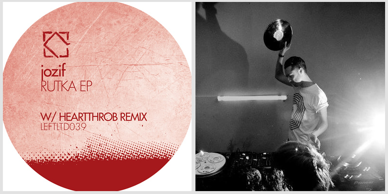

jozif - Rutka EP on Leftroom Limited
{kind=link}

London’s jozif has established himself as a maestro of the more emotional side of underground house, with releases far and wide on labels like Crosstown Rebels and Wolf + Lamb among others, as well as his particularly moving and heartfelt contribution to the Balance series last year. Here he returns to the Leftroom Limited stable for an EP, and while it’s comprised largely of functional house records, each still brings something a little bit different to the table.
While emotion and warmth might be jozif’s calling card, the EP’s lead single Rutka shows his ease at producing a tune that slams in with more of a straightforward groove. Nonetheless, it’s still injected with that special ‘something’ that makes it stand out; there’s a sense of menace here, with haunting melodies that swirl up to dominate the mix, while the rhythmic elements and trippy vocal samples really build in intensity in the record’s latter half.
Sneak Thief pushes things into more straightforward groove-driven territory still, though with a few of jozif’s recognizable jazzy elements mixed in to offer a pleasing contrast. Elsewhere, a Hearthrob remix offers a more streamlined affair for the clubs, while Afraid of Dee is more of a melody-soaked progressive record.
While Rutka doesn’t scale the emotional heights of jozif’s Balance mix from last year, that’s not his intention. Without they’re perhaps less than remarkable, these are all quality records that will slide smoothly into a variety of different DJ sets.
jozif - Rutka EP on Leftroom Limited
www.leftroom.com | soundcloud.com/jozif
Our Rating: 7.5/10